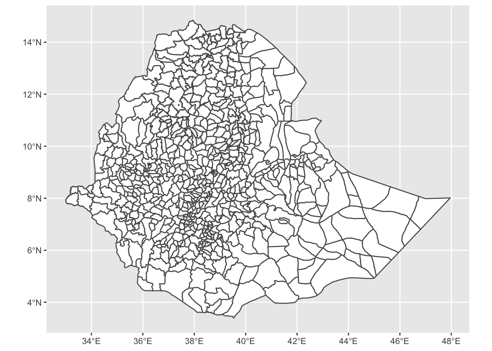
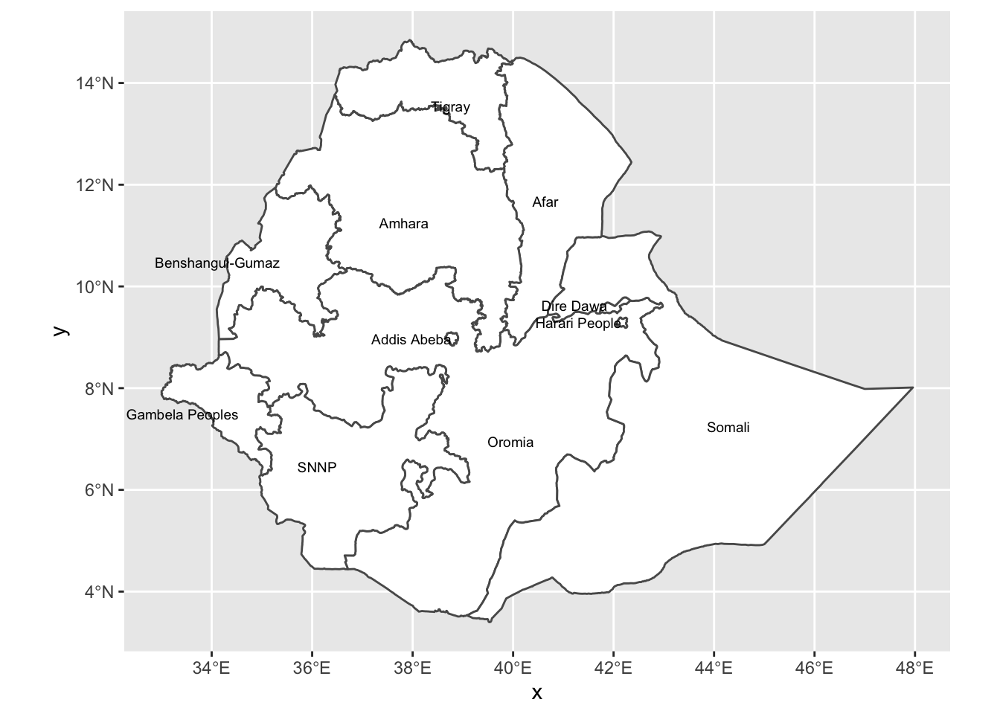
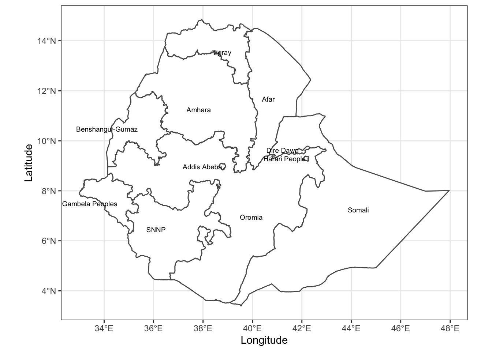
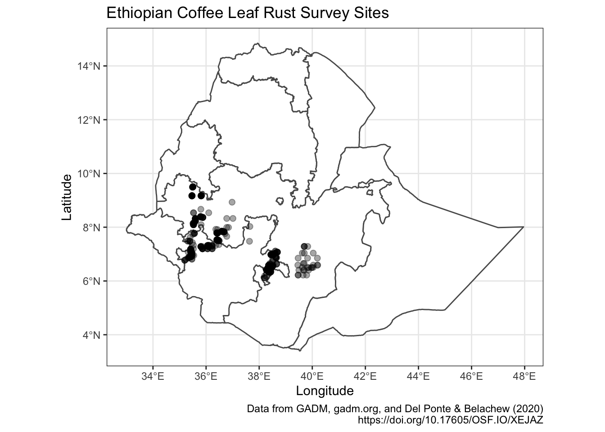
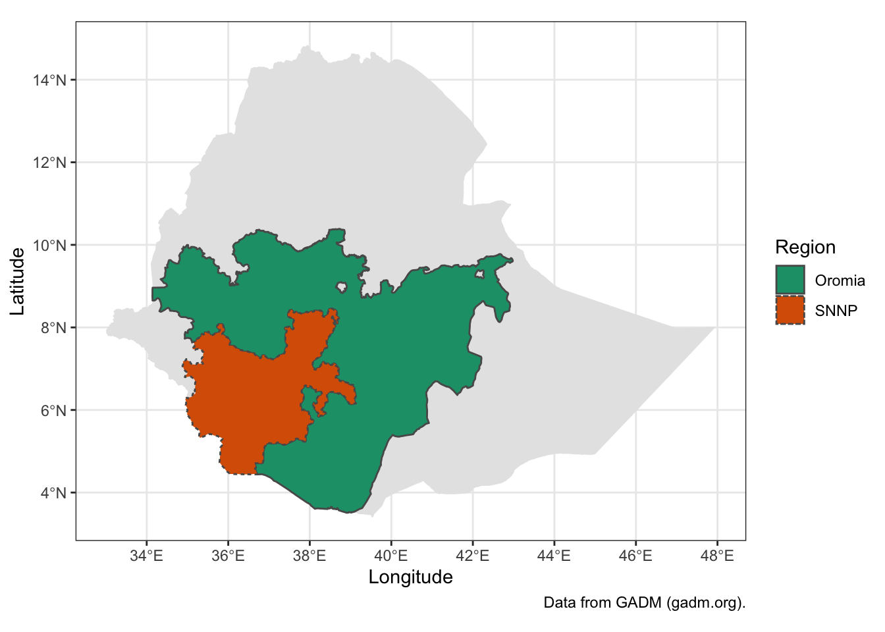
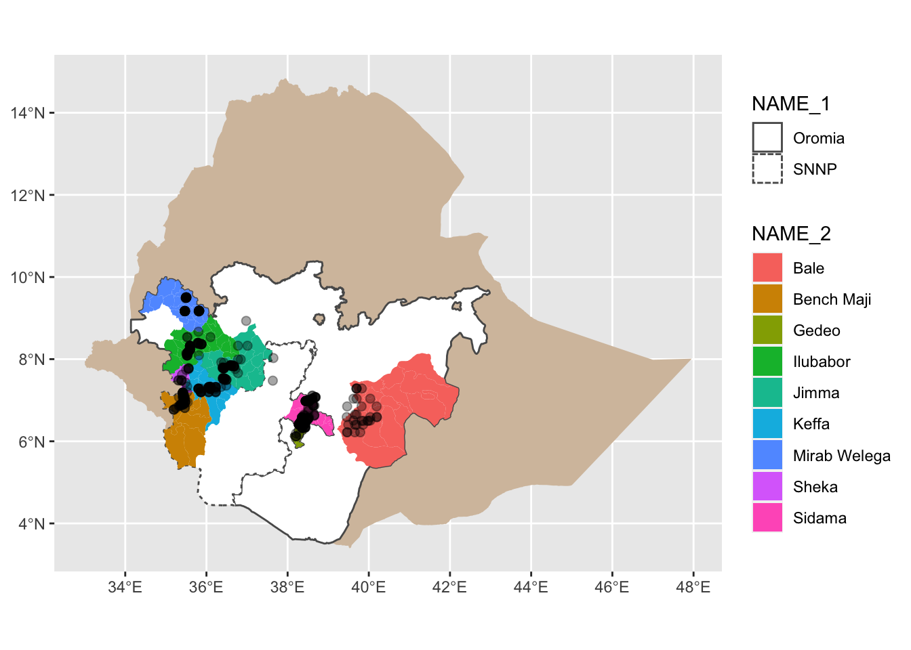
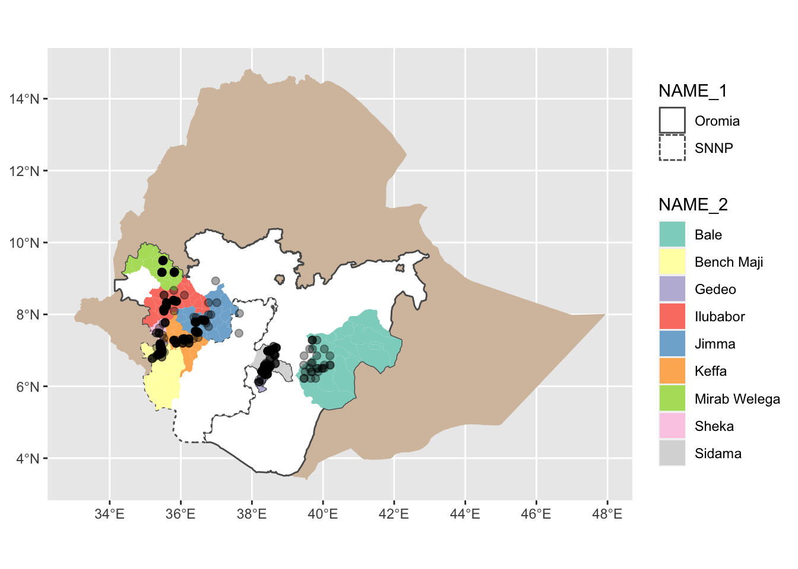
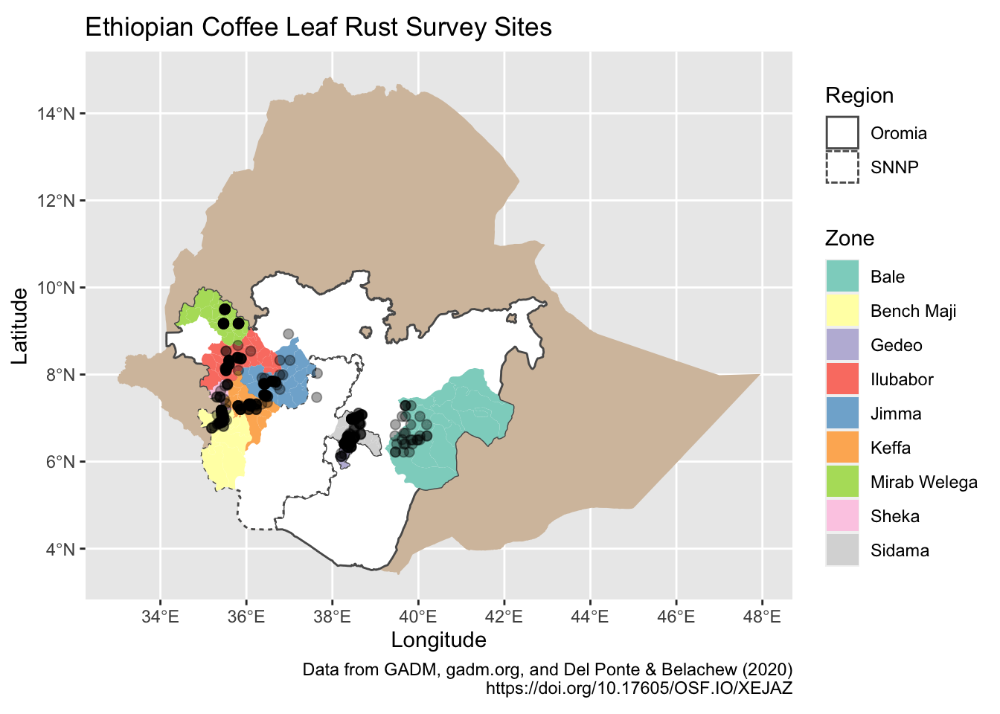
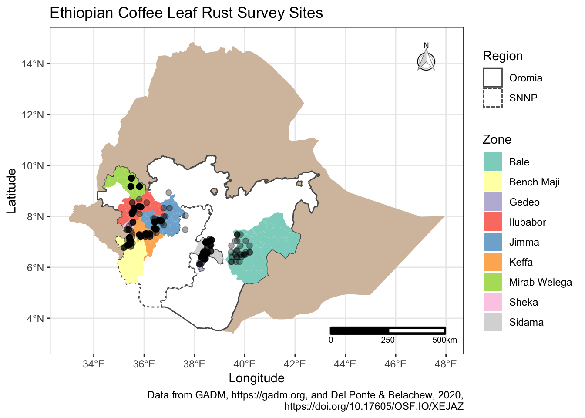

In this exercise we will use simple features and ggplot2 to create a map of Ethiopia and then a map of two regions highlighting the regions within a larger map of Ethiopia. Once we have the base maps of the country and regions we will add points and zones to the map to indicate survey sites.
Several packages offer direct access to map layers in R for use in creating maps. However, in this exercise we will download the data directly from https://www.gadm.org. GADM is a free resource to use for non-commercial and research purposes that provides data for mapping administrative boundaries. You can find out more at https://gadm.org/about.html.
For our map we will download an sf object. sf stands for “Simple Features”, which means that geospatial data is represented as records in a data.frame in R, making it easier to work with than previous spatial data formats for R. sf plays nicely with the tidyverse making it ideal for using with ggplot2 when making maps.
Using download.file(), we will download an sf file from the GADM website. download.file() is a base R function useful for retrieving data from a web URL and making it available in your R session. Here we will download the data to R’s tempdir(), a temporary directory that R uses during your session. Nothing here is saved after you exit R. If you wish to save the GADM file, you should specify another location, e.g. in your Documents or Home directories to save the file for later use, you can do this in the Using this method allows us to all download the file and import it into R using the same commands without worrying about usernames, operating systems, etc.
This next section provides the URL to the .rds file (a native R file format) containing the data for mapping Ethiopia. Then we provide the file path to save the file in the tempdir(). Next, we check what operating system is being used to download the data. Windows handles the downloads differently and will corrupt the file if not properly handled. The if() section checks the OS and then proceeds to download the file using the proper method depending on the OS detected. Lastly using readRDS() we import the data and create our first plot of Ethiopia.
Just for the purposes of the presentation, I’ve broken up the URL here so that we can fit everything on the presentation slide. Ordinarily there’s no need to use paste0() to create a URL!
# Remote file information
u_remote <- "https://biogeo.ucdavis.edu/"
p_remote <- "data/gadm3.6/Rsf/"
f_name <- "gadm36_ETH_3_sf.rds"
# Local file location to save to
ethiopia_rds <- file.path(tempdir(), "gadm36_ETH_3_sf.rds")
if (toupper(Sys.info()["sysname"]) == "WINDOWS") {
download.file(
url = paste0(u_remote, p_remote, f_name),
destfile = ethiopia_rds,
method = "wininet",
mode = "wb"
)
} else {
download.file(
url = paste0(u_remote, p_remote, f_name),
destfile = ethiopia_rds,
method = "auto"
)
}GADM distributes native R files in .rds format that we then import.
Creating maps using ggplot2 and sf follows the same principals that Felipe has already demonstrated with geom_*()s, layers, themes, colours and fills.
First, plot the whole country using ggplot2’s geom_sf() and the ethiopia_sf object.

We can see that there are several zones, shown as the smaller polygons within the larger country outline, in this data set. It is possible to merge polygons so that we have an object with a different level of detail than what we started with.
The GADM data have several columns to work with. You can find out what these are by using the names().
## [1] "GID_0" "NAME_0" "GID_1" "NAME_1" "NL_NAME_1" "GID_2"
## [7] "NAME_2" "NL_NAME_2" "GID_3" "NAME_3" "VARNAME_3" "NL_NAME_3"
## [13] "TYPE_3" "ENGTYPE_3" "CC_3" "HASC_3" "geometry"We can group the GADM data using dplyr::group_by() to group the polygons into larger regions and add labels to them. In this data set, there are three levels and three columns we might be interested in.
NAME_0 refers to the country level and gives a whole country outline,NAME_1 refers to the second level of administrative boundaries, e.g. states within the USA,NAME_2 refers to the third level of administrative boundaries, e.g. counties or parishes within a US state, andNAME_3 refers to the fourth level of administrative boundaries, e.g. districts within counties in a US state.Grouping by any value, 0 - 2 will aggregate or dissolve the lines within the map producing larger polygons. Here we will group by NAME_1 for the regions. We will also rename a region using mutate() for a cleaner map and to illustrate how to manipulate data in an sf object using dplyr.
ethiopia_regions_sf <-
ethiopia_sf %>%
mutate(NAME_1 = gsub("Southern Nations, Nationalities and Peoples", "SNNP",
NAME_1)) %>%
group_by(NAME_1) %>%
summarise() %>%
ungroup() %>%
st_as_sf()Using geom_sf_text() we can add labels to the map.
ethiopia_regions_ggplot <-
ggplot(ethiopia_regions_sf) +
geom_sf(fill = "white") +
geom_sf_text(
aes(label = NAME_1),
size = 2.5,
hjust = 1
)
ethiopia_regions_ggplot
The ggplot2 theme, theme_bw() is nice to use with maps, so we will apply that here as well as labelling the x and y axis with “longitude” and “latitude” labels.
ethiopia_regions_ggplot <-
ethiopia_regions_ggplot +
labs(x = "Longitude",
y = "Latitude") +
theme_bw()
ethiopia_regions_ggplot
Now we will build on the maps we created by adding the sampling location points that Del Ponte and Belachew (2020) used with latitude and longitude values from their CSV file.
Using the previously created ethiopia_regions_sf object, we will plot the locations of the survey sites from Del Ponte and Belachew (2020). We will download their CSV directly into our R session from the GitHub repository.
While we could plot everything using geom_point() directly from the .CSV file data.frame, but if we convert the data.frame to an sf object it is much more flexible for mapping with other sf objects in ggplot2. The conversion is done using st_as_sf() and providing the columns that hold the coordinates (latitude and longitude). The crs argument tells sf what projection we want to use. Map projections are used to deal with the distortion of creating a flat figure to represent a spherical surface. In this case we’ll use EPSG:4326, which is only latitude and longitude values. While we won’t go into projections here, the sf vignette describes some of the ideas behind this and many more web resources exist to help you pick the right projection for your map.
Now we’re ready to add the new sf object of sampling points to the map!
Adding the points to the map works in the same fashion as adding layers in other ggplot2 objects. We’ll use the existing ethiopia_regions_ggplot object and add a new layer of the point data.
ethiopia_regions_ggplot +
geom_sf(data = coffee_sampling_sf,
size = 2,
color = alpha("black", 0.35))
In some cases it is desirable to create maps highlighting certain areas, e.g. states, regions, counties, etc.
Del Ponte and Belachew (2020) sampled in two regions of Ethiopia, Oromia and Southern Nations, Nationalities and Peoples’ Region (SNNP).
If you wish to highlight the regions, calling them out on the map as Del Ponte and Belechew (2020) did in their work, we can create a new object of only these two regions and plot them in a new layer.
To do this we’ll create two new layers to work with. The first layer will just be Ethiopia with no regions, zones or other subdivisions. The second layer will be the layer that contains Oromia and SNNP based on the ethiopia_regions_sf object that we’ve already created.
# First layer, country outline
ethiopia_simple_sf <-
ethiopia_sf %>%
group_by(NAME_0) %>%
summarise() %>%
ungroup() %>%
st_as_sf()
# Second layer, regions we're interested in
oromia_snnp_sf <- filter(
ethiopia_regions_sf,
NAME_1 == "Oromia" |
NAME_1 == "SNNP"
)Plot the complete map.
ggplot() +
geom_sf(data = ethiopia_simple_sf,
col = NA) +
geom_sf(data = oromia_snnp_sf,
aes(linetype = NAME_1,
fill = NAME_1)) +
scale_fill_brewer(palette = "Dark2") +
labs(
caption = "Data from GADM (gadm.org).",
fill = "Region",
linetype = "Region",
x = "Longitude",
y = "Latitude"
) +
theme_bw()
Del Ponte and Belechew (2020) display a map that highlights the two regions, Oromia and SNNP with the zones within them where surveys were conducted also coloured. We can recreate this map, but will do so without the labels that they used. Here we will only plot the points that were surveyed as before on top of the two regions and nine zones surveyed.
First create another new layer of only the zones that were involved in the survey. Then construct the map using the layers we’ve already created. Lastly, using functions from ggsn, scalebar() and north(), add a scale bar to the bottom right and a north arrow to the upper right to orient viewers who may not be familiar with Ethiopia.
ethiopia_zones_sf <-
ethiopia_sf %>%
filter(
NAME_2 %in% c(
"Jimma",
"Mirab Welega",
"Sidama",
"Sheka",
"Keffa",
"Bench Maji",
"Bale",
"Gedeo",
"Ilubabor"
)
)Plot the data to check.
final_map <- ggplot() +
geom_sf(data = ethiopia_simple_sf,
col = NA,
fill = "#D5C1AB") + # use a coffee-ish colour background for country
geom_sf(data = oromia_snnp_sf, # add the two regions in white
aes(linetype = NAME_1),
fill = "white") +
geom_sf(data = ethiopia_zones_sf, # add zones and fill by name
aes(fill = NAME_2),
colour = NA) + # no outline colour
geom_sf(data = coffee_sampling_sf,
# add sampling points
size = 2,
colour = alpha("black", 0.35))
final_map
The Colorbrewer palette offers good colours for maps, see https://colorbrewer2.org for more ideas. Here we’ll use scale_fill_brewer(), a built in ggplot2 colour scale that can be used with any type of plot, not just maps.
final_map <-
final_map +
scale_linetype( # define region outline linetype by region
labels = function(x)
str_wrap(x, width = 5)
) +
scale_fill_brewer(palette = "Set3") # this colours the zones, https://colorbrewer2.org/
final_map
final_map <-
final_map +
labs(
x = "Longitude",
y = "Latitude",
title = "Ethiopian Coffee Leaf Rust Survey Sites",
caption = "Data from GADM, gadm.org, and Del Ponte & Belachew (2020)
https://doi.org/10.17605/OSF.IO/XEJAZ",
fill = "Zone",
linetype = "Region"
)
final_map
Lastly, add standard map items like a scale bar and north arrow using functions from ggsn, north() and scalebar().
final_map <-
final_map +
north(ethiopia_simple_sf) + # from ggsn
scalebar( # from ggsn
ethiopia_simple_sf,
dist = 250,
st.size = 2.5,
dist_unit = "km",
transform = TRUE,
model = "WGS84"
) +
theme_bw()
final_map
The final map includes a title, a data acknowledgement and clearly labelled legend describing the contents. Aside from using ggsn functions, the map is generated using familiar ggplot2 commands.